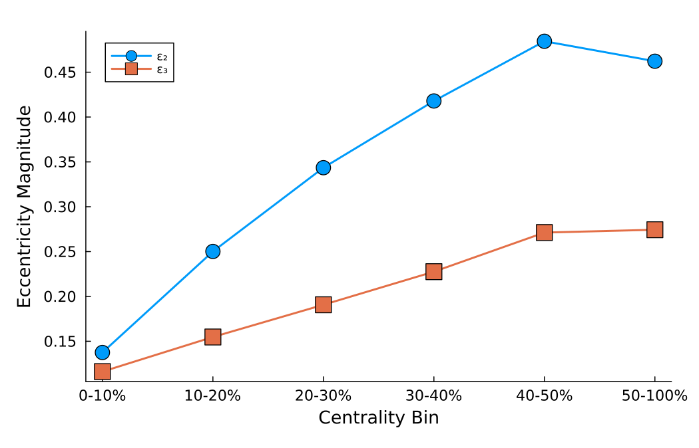

Examples
Centrality Selection
centralities_selection_events partitions events by multiplicity (most central first). The bins vector defines the upper edges of the centrality classes in percent.
n1 = Oxygen()
n2 = Oxygen()
participants = Participants(n1, n2, 0.5, 2760, 1.0, 0.0)
events = rand(threaded(participants), 200_000)
bins = [10, 20, 30, 40, 50, 60, 70, 80, 90, 100]
batches = centralities_selection_events(events, bins)
central_0_10 = batches[1]
peripheral_50_60 = batches[6]Eccentrities
epsilon_n_psi_n computes the n-th eccentricity of a given event. The following script can be used to compute e.g. the average epsilon_2 in the specified centrality classes.
m = 2
function avg_eccentricity(batch, n)
ecc = epsilon_n_psi_n.(batch, n)
return mean(getindex.(ecc, 1)), mean(getindex.(ecc, 2))
end
ecc2 = [avg_eccentricity(batches[i], m) for i in eachindex(batches)]
ecc2_magnitude = getindex.(ecc2, 1)
ecc2_angle = getindex.(ecc2, 2)
Background and Two-Point Correlator
This is a high-level workflow that builds the background profile and correlators. It can be expensive for large minBiasEvents.
fmGeV = 5.0
entropy(T) = 47.5 * 4 * T^3 * pi^2 / 90 * fmGeV^3
entropyToTemp = InverseFunction(entropy)
dSdT(T) = 1 / (3 * 47.5 * 4 * T^2 * pi^2 / 90 * fmGeV^2)
Norm = 100
m_list = [2,3]
bg, twpt = generate_bg_twpt_fct(entropyToTemp,dSdT,
Norm,
n1,n2,w ,k,p,s_NN,
bins, m_list;
minBiasEvents = 1000, r_grid = 0:1.:5, NumPhiPoints = 20, Threaded = true, Nfields = 10)The function return an error if not enough minBiasEvents are provided for the selected amount of bins.
Background and Two-Point Correlator with File I/O
You can also generate the background profiles and two-point correlators while automatically saving them to disk using generate_bg_twpt_fct_save. This function processes each centrality bin separately, allowing it to read previously computed results and avoid recomputation.
bg, twpt = generate_bg_twpt_fct_save(entropyToTemp, dSdT,
Norm,
n1, n2, w ,k,p,s_NN,
bins, m_list;
minBiasEvents = 1000,
r_grid = 0:1.:5,
NumPhiPoints = 20,
Threaded = true,
Nfields = 10,
path = "./results/",
override_files = false)The function will:
- Create a
Participantsobject and sample events for each centrality bin. - Write background profiles and correlators to disk using the naming convention from
construct_trento_names. - If files already exist and
override_files=false, it will read from disk instead of recomputing. - Return the full
bgarray and correlator tensortwptacross all bins.
This approach is useful for expensive calculations or workflows where you need persistent storage of intermediate results.